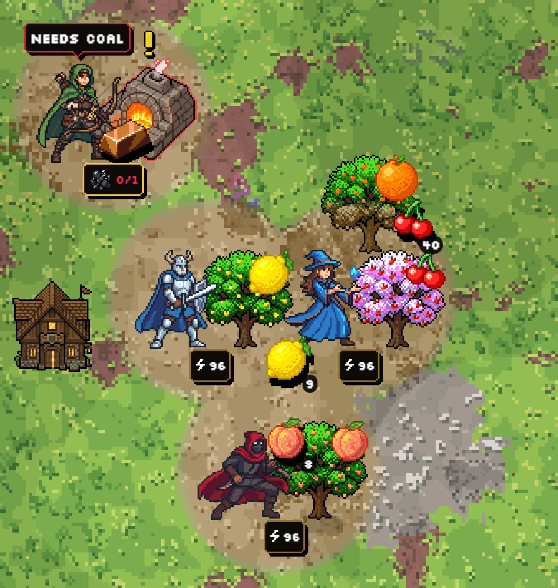
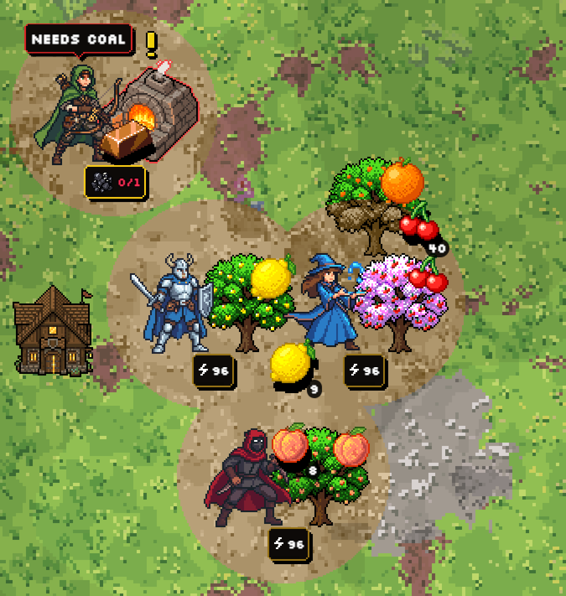
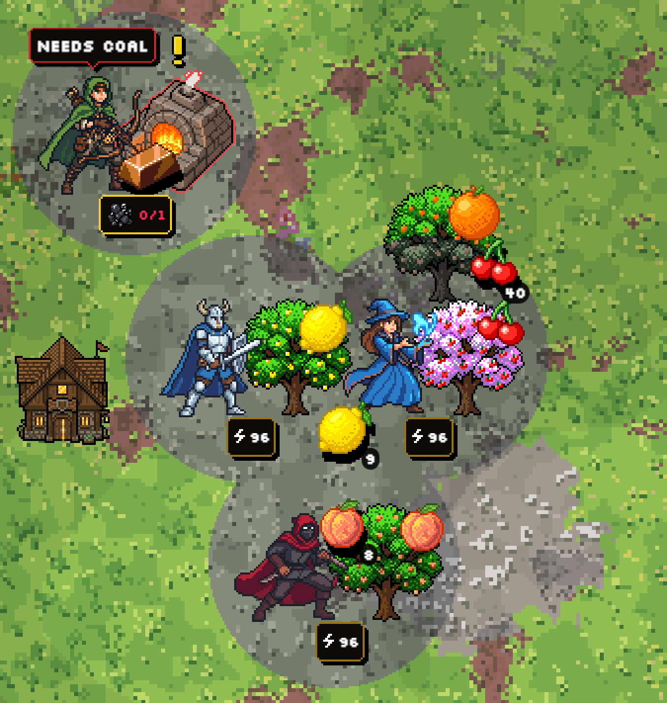
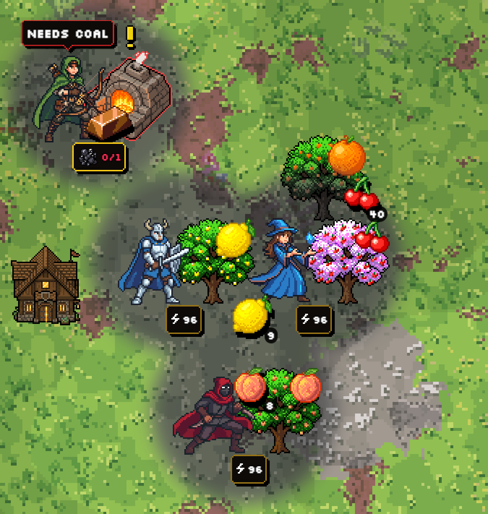
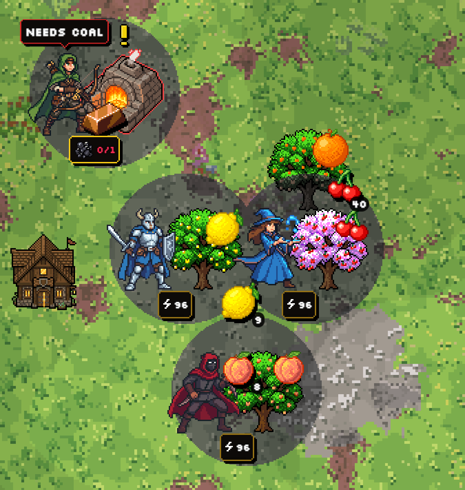
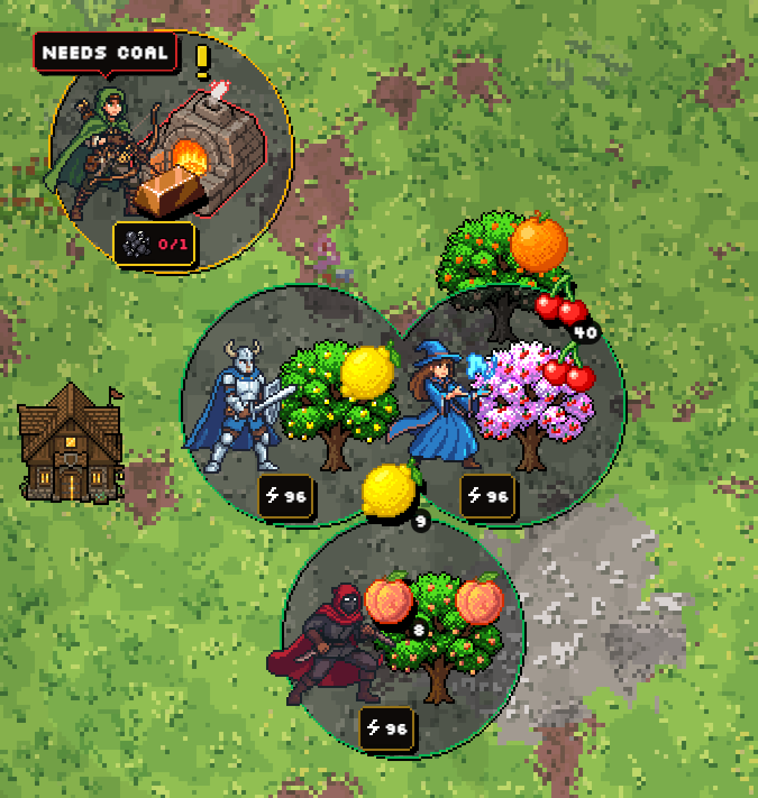

Job areas: pick a look
The same busy scene four times, from the running game: four heroes on four Tokens side by side, the furnace stuck (it needs Coal), and an orange tree at rest whose lower half stands inside the cherry tree's area. None has a ring line. In A, B and C each area is centred between the hero and the Token (the middle of their sprites); D is today's look and today's centring, as the before. E, at the top, was added after the first look: A's parchment with a soft edge. Pick one letter.










How each look is made (for the build)
- All four fill the whole area (the edge cells included), one shape for all jobs, so overlaps dim once. The worked Tokens and heroes stay above it, untouched; Tokens at rest inside it are dimmed with the ground.
- A: a grey layer at full strength in
saturationblend (all colour drained), then#b8925aat 0.75 incolorblend (the sepia), then#f3e2bfat 0.5 insoft-lightblend (the paper), then black at 0.10 (light 0.9). - B: grey at 0.8 in
saturationblend (as today), then black at 0.18 (light 0.82; today is 0.6). - C: today's two layers (grey 0.8
saturation, black 0.4), each through a mask made of the area's shape blurred by a Gaussian of 6 art pixels, so the edge fades from full to nothing across about 12 art pixels, centred on the area's edge. - E: A's four layers, each through one stepped mask. Each cell's distance in from the area's outside (4-neighbour steps, in art pixels) picks its strength: 1-2 px in 20%, 3-4 px 40%, 5-6 px 60%, 7-8 px 80%, 9 px and deeper full. The fade runs inward from the edge, so the area's outline is the same as A's; no blur, no dither.
- D: today's two layers (grey 0.8
saturation, black 0.4), today's centre. - Centring (A to C): each sprite's visual centre is the middle of the box of its drawn pixels; the area's centre is the middle of the hero's and the Token's. The radius follows today's rule from that centre: it reaches the farthest corner of the Token's body box and the hero's box, plus 2 art pixels. Off today's centre that rule comes out about 60 art pixels instead of 54, so A to C are a little bigger than D.